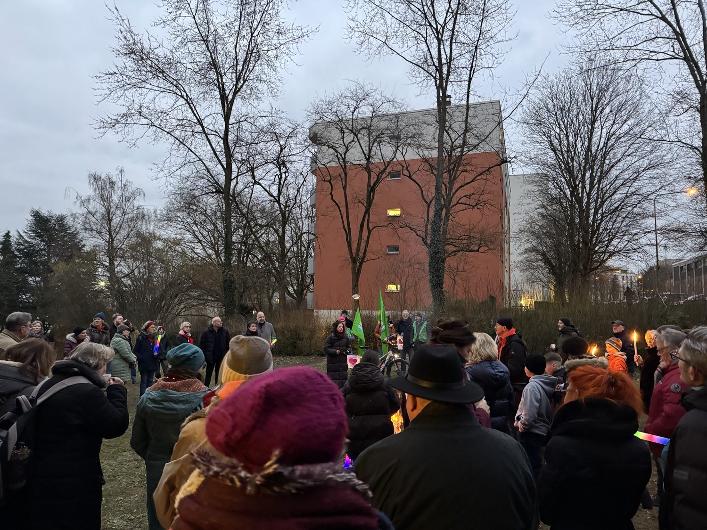
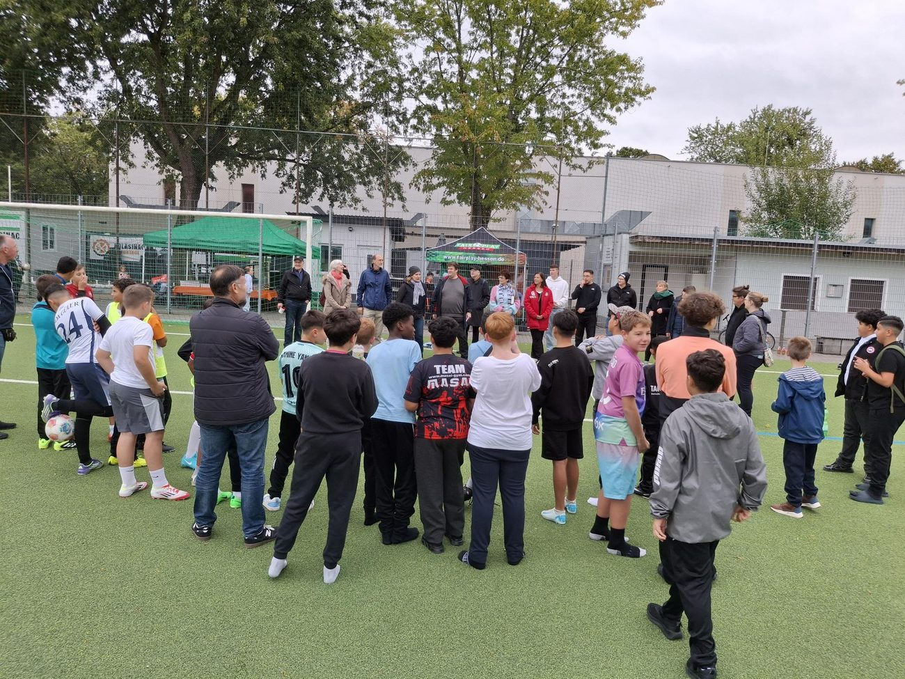
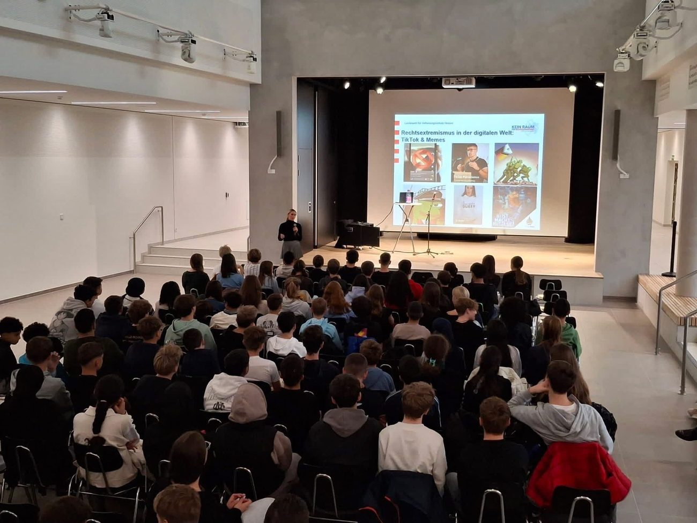
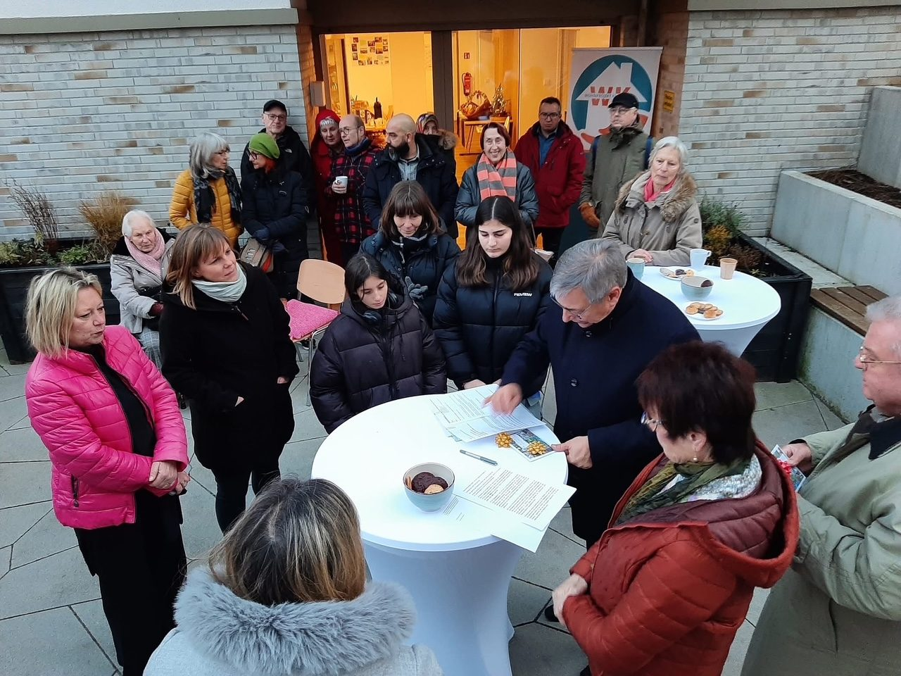
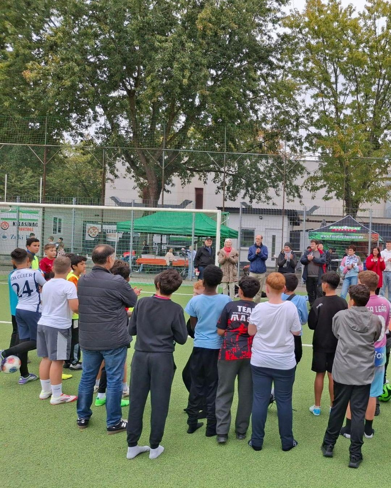
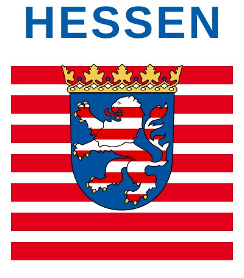
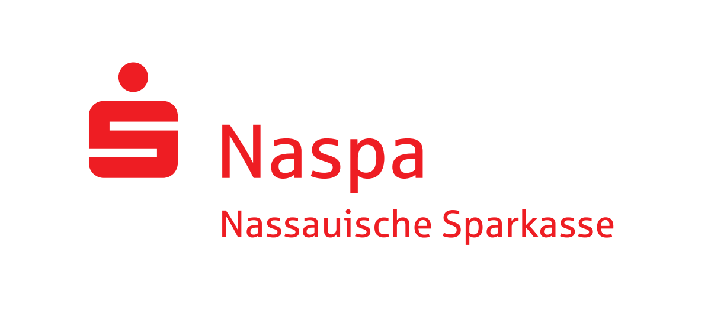
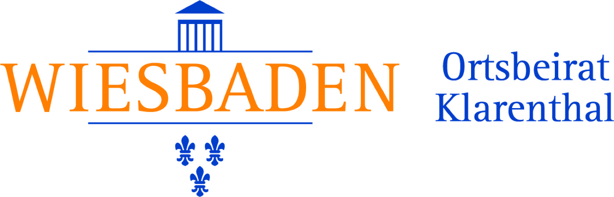

Kennst du dein Grundgesetz? Du darfst …
Deine Meinung sagen
Artikel 5Freiheit der Meinung, Kunst und Wissenschaft
Wir sind eine Initiative von engagierten Menschen aus Klarenthal, die sich für ein respektvolles Miteinander, demokratische Werte und gesellschaftlichen Zusammenhalt einsetzen.
„Wer in der Demokratie schläft, wacht in der Diktatur auf.“





In unserer Initiative haben sich KlarenthalerInnen, die christlichen Kirchen, Vertreter /-innen aller demokratischen Parteien, das Volksbildungswerk Klarenthal, KiEZ, das Stadtteilzentrum Klarenthal und weitere Akteure der Klarenthaler Zivilgesellschaft zusammengeschlossen.
Förderung von Toleranz und Vielfalt im Stadtteil — alle sind willkommen mit ihren Ideen, ihrem Engagement und Interesse.
Stärkung demokratischer Werte im Alltag — denn Demokratie lebt durch uns alle.
Begegnung und Dialog zwischen Menschen unterschiedlicher Hintergründe.
Aktives Eintreten gegen Diskriminierung und Extremismus — gemeinsam gestalten wir Klarenthal.
Dann werde Teil unserer Initiative! Für ein lebendiges, offenes und demokratisches Miteinander. Sei dabei!
Kontakt aufnehmen

